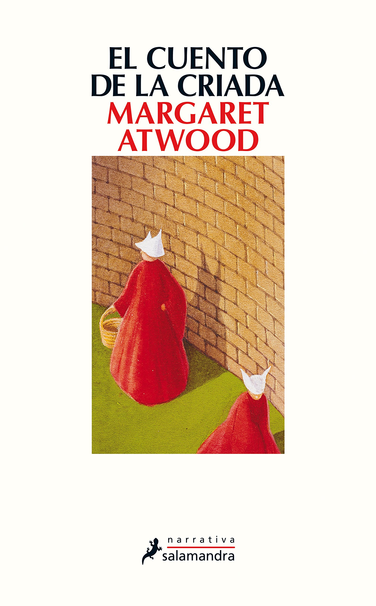

Cómpralo
El cuento de la criada
Margaret Atwood
En el estado de Gilead, donde tras una hecatombe nuclear la población ha visto disminuida su capacidad de reproducción, las Criadas, vestidas con hábitos rojos de la cabeza a los pies, con el rostro cubierto por un velo transparente y enmarcado por una toca blanca, desempeñan una funcion esencial: concebir y dar a luz a futuros ciudadanos. Destinadas a esta empresa suprema, viven enclaustradas y reducidas a ser un cuerpo con una única misión: reproducirse.

Cómpralo
La quinta estación
N. K. Jemisin
Toda era tiene que llegar a su fin. Ha dado comienzo una estación de desenlaces. Empieza con una gran grieta roja que recorre las entrañas del único continente del planeta, una grieta que escupe una ceniza que oculta la luz del sol. Empieza con la muerte, con un hijo asesinado y una hija perdida. Empieza con una traición, con heridas latentes que comienzan a supurar. El lugar es la Quietud, un continente acostumbrado a la catástrofe en el que la energía de la tierra se utiliza como arma. Y en el que no hay lugar para la misericordia.

Cómpralo
El prisionero de Azkaban
J. K. Rowling
Harry aguarda con impaciencia el inicio del tercer curso en el Colegio Hogwarts de Magia y Hechicería. Tras haber cumplido los trece años, solo y lejos de sus amigos de Hogwarts, Harry se pelea con su bigotuda tía Marge, a la que convierte en globo, y debe huir en un autobús mágico. Mientras tanto, de la prisión de Azkaban se ha escapado un terrible villano, Sirius Black, una asesino en serie con poderes mágicos que fue cómplice de lord Voldemort y que parece dispuesto a eliminar a Harry del mapa. Y por si esto fuera poco, Harry deberá enfrentarse también a unos terribles monstruos, los dementores, seres abominables capaces de robarles la felicidad a los magos y de borrar todo recuerdo hermoso de aquellos que osan mirarlos. Lo que ninguno de estos malvados personajes sabe es que Harry, con la ayuda de sus fieles amigos Ron y Hermione, es capaz de todo y mucho más.